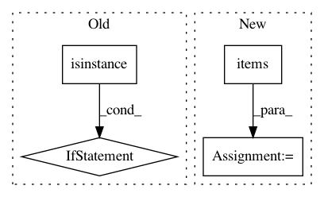

10d7ece1c34c5533262a54d20d974a3d04f0b7ce,src/sdk/pynni/nni/compression/tensorflow/compressor.py,,_instrument_model,#Any#Any#,289
Before Change
name, index = key
cur = getattr(cur, name)[index]
key = wrapper.layer_info.path[-1]
if isinstance(key, str):
setattr(cur, key, wrapper)
else:
name, index = key
getattr(cur, name)[index] = wrapper
//if isinstance(cur, tf.keras.Sequential):
// cur._graph_initialized = False
// cur._layer_call_argspecs[wrapper] = cur._layer_call_argspecs[wrapper.layer]
After Change
return tf.keras.Sequential(layers) if need_rebuild else seq
def _instrument_model(self, model):
for key, value in list(model.__dict__.items()): // avoid "dictionary keys changed during iteration"
if isinstance(value, tf.keras.layers.Layer):
new_layer = self._instrument(value)
if new_layer is not value:
setattr(model, key, new_layer)
elif isinstance(value, list):
for i, item in enumerate(value):
if isinstance(item, tf.keras.layers.Layer):
value[i] = self._instrument(item)
return model
def _select_config(self, layer):
In pattern: SUPERPATTERN
Frequency: 3
Non-data size: 4
Instances
Project Name: microsoft/nni
Commit Name: 10d7ece1c34c5533262a54d20d974a3d04f0b7ce
Time: 2020-09-15
Author: 40699903+liuzhe-lz@users.noreply.github.com
File Name: src/sdk/pynni/nni/compression/tensorflow/compressor.py
Class Name:
Method Name: _instrument_model
Project Name: catalyst-team/catalyst
Commit Name: 1d936f7ff3ab938d2712870f9f36d59c40df8f00
Time: 2019-08-30
Author: scitator@gmail.com
File Name: catalyst/rl/core/trainer.py
Class Name: TrainerSpec
Method Name: _run_loader
Project Name: deepmipt/DeepPavlov
Commit Name: 3de066d408d811db29161d90c1c81c43d08f7efc
Time: 2018-11-01
Author: yoptar@gmail.com
File Name: deeppavlov/download.py
Class Name:
Method Name: deep_download